This qualification report evaluates for the PBPK platform PK-Sim (as part of the open systems pharmacology (OSP) suite) the ability to perform simulations with the intended purpose to predict UGT1A1- and UGT1A9-mediated drug-drug interactions (DDI)
To demonstrate the level of confidence the predictive performance of the platform for this indented purpose is assessed particularly for inhibition of UGT1A1 and UGT1A9 by selected perpetrators on sensitive substrates . All PBPK models represent whole-body PBPK models, which allow dynamic DDI simulations in organs expressing UGT1A1 or UGT1A9, respectively.
The respective qualification plan to produce this qualification report is transparently documented and provided open-source (www.open-systems-pharmacology.org). The same applies for all presented PBPK models including evaluation reports on model building and evaluation of each model.
Evaluation reports including descriptions on model building and detailed evaluations of the included models are documented separately (see Section 1.2).
Please refer to the Appendix to learn more details:
Mathematical Implementation shows the implementation of the underlying mathematical equations for drug-drug interactions in the OSP suite.
A detailed general description of the performed qualification workflow (qualification plan, qualification report, etc.) can be found in chapter Automatic (re)-qualification workflow.
1.2 UGT DDI Network
The following perpetrator compounds were selected:
Atazanavir (UGT1A1 inhibitor) Model snapshot and evaluation plan (releasev1.1): https://github.com/Open-Systems-Pharmacology/Atazanavir-Model/releases/tag/v1.1
Mefenamic acid (UGT1A9 inhibitor) Model snapshot and evaluation plan (releasev1.1): https://github.com/Open-Systems-Pharmacology/Mefenamic-acid-Model/releases/tag/v1.1
The following sensitive substrates as victim drugs were selected:
Raltegravir (UGT1A1 substrate) Model snapshot and evaluation plan (releasev1.2): https://github.com/Open-Systems-Pharmacology/Raltegravir-Model/releases/tag/v1.2
Dapagliflozin (UGT1A9 substrate): Model snapshot and evaluation plan (releasev1.1): https://github.com/Open-Systems-Pharmacology/Dapagliflozin-Model/releases/tag/v1.1
The published DDI studies between the respective perpetrators and victim drugs were simulated and compared to observed data. The following sections give an overview of the clinical studies being part of this qualification report. The respective data identifier (DataID) refers to the ID of the dataset in the OSP PK database.
1.2.1 Atazanavir - Raltegravir DDI
The release of the snapshot containing the respective simulations can be found here: https://github.com/Open-Systems-Pharmacology/Atazanavir-Raltegravir-DDI/releases/tag/v1.1.
The release of the snapshot containing the respective simulations can be found here: https://github.com/Open-Systems-Pharmacology/Mefenamic_acid-Dapagliflozin-DDI/releases/tag/v1.1.
The mefenamic acid / dapagliflozin interaction was evaluated using 1 clinical DDI study (Kasichayanula 2013).
DataID
Enzyme
Perpetrator / victim
Study design
Clinical study
642
UGT1A9
Mefenamic acid / dapagliflozin
Mefenamic acid: 500 mg loading dose, followed by 8 doses of 250 mg mefenamic acid every 6 hours Dapagliflozin: 10 mg single dose on day 2 simultaneous with the 5th dose of mefenamic acid (24 hours after the first mefenamic acid dose)
Figure 1: UGT1A1 and UGT1A9 Inhibition DDI. Predicted vs. Observed AUC Ratio.
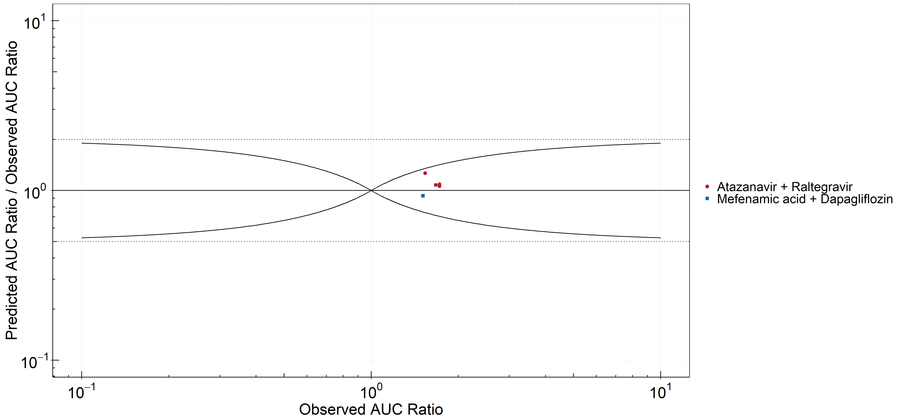
Figure 2: UGT1A1 and UGT1A9 Inhibition DDI. Predicted/Observed vs. Observed AUC Ratio.
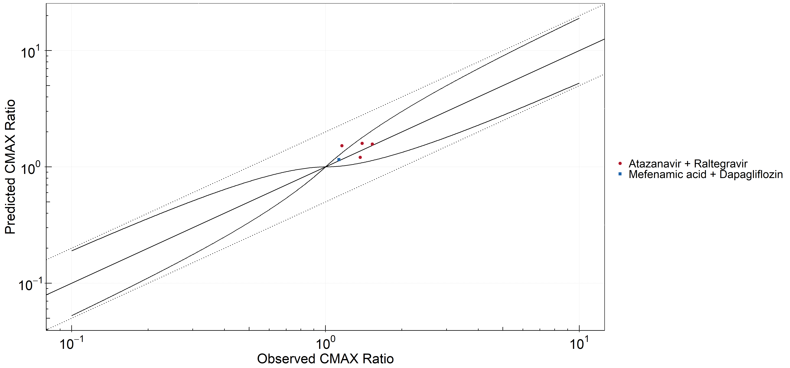
Figure 3: UGT1A1 and UGT1A9 Inhibition DDI. Predicted vs. Observed CMAX Ratio.
Figure 4: UGT1A1 and UGT1A9 Inhibition DDI. Predicted/Observed vs. Observed CMAX Ratio.
Table 1: GMFE for UGT1A1 and UGT1A9 Inhibition DDI DDIRatio-1
PK parameter
GMFE
AUC
1.11
CMAX
1.12
Table 2: Summary table for UGT1A1 and UGT1A9 Inhibition DDI DDIRatio-1 AUC
AUC
Number
Ratio [%]
Points total
5
-
Points within Guest et al.
5
100
Points within 2 fold
5
100
Table 3: Summary table for UGT1A1 and UGT1A9 Inhibition DDI DDIRatio-1 CMAX
CMAX
Number
Ratio [%]
Points total
5
-
Points within Guest et al.
4
80
Points within 2 fold
5
100
DataID
Perpetrator
Victim
Predicted AUC Ratio
Observed AUC Ratio
Pred/Obs AUC Ratio
Predicted CMAX Ratio
Observed CMAX Ratio
Pred/Obs CMAX Ratio
Reference
571
Atazanavir, 400 mg, PO, MD OD (9 days)
Raltegravir, PO
1.87
1.72
1.09
1.57
1.53
1.03
Iwamoto 2008
573
Atazanavir, 400 mg, PO, MD OD (8 days)
Raltegravir, PO
1.83
1.72
1.06
1.21
1.37
0.88
Neely 2010
575
Atazanavir, 400 mg, PO, MD OD (9 days)
Raltegravir, PO
1.80
1.67
1.08
1.52
1.16
1.31
Krishna 2016
579
Atazanavir, 400 mg, PO, MD BID (14 days)
Raltegravir, PO
1.94
1.54
1.27
1.59
1.39
1.14
Zhu 2010
642
Mefenamic Acid, 500 / 250 mg, PO, MD QID (4 days) with first dose ad loading dose
Dapagliflozin, PO
1.41
1.51
0.93
1.16
1.13
1.02
Kasichayanula 2013a
2.1 Mechanism
2.1.1 Reversible Inhibition
Figure 5: UGT1A1 and UGT1A9 Inhibition DDI. Mechanism: Reversible Inhibition. Predicted vs. Observed AUC Ratio.
Figure 6: UGT1A1 and UGT1A9 Inhibition DDI. Mechanism: Reversible Inhibition. Predicted/Observed vs. Observed AUC Ratio.
Figure 7: UGT1A1 and UGT1A9 Inhibition DDI. Mechanism: Reversible Inhibition. Predicted vs. Observed CMAX Ratio.
Figure 8: UGT1A1 and UGT1A9 Inhibition DDI. Mechanism: Reversible Inhibition. Predicted/Observed vs. Observed CMAX Ratio.
Table 4: GMFE for UGT1A1 and UGT1A9 Inhibition DDI DDIRatio-1-mechanism-Reversible Inhibition
PK parameter
GMFE
AUC
1.11
CMAX
1.12
Table 5: Summary table for UGT1A1 and UGT1A9 Inhibition DDI DDIRatio-1-mechanism-Reversible Inhibition AUC
AUC
Number
Ratio [%]
Points total
5
-
Points within Guest et al.
5
100
Points within 2 fold
5
100
Table 6: Summary table for UGT1A1 and UGT1A9 Inhibition DDI DDIRatio-1-mechanism-Reversible Inhibition CMAX
CMAX
Number
Ratio [%]
Points total
5
-
Points within Guest et al.
4
80
Points within 2 fold
5
100
2.2 Perpetrator
2.2.1 Atazanavir
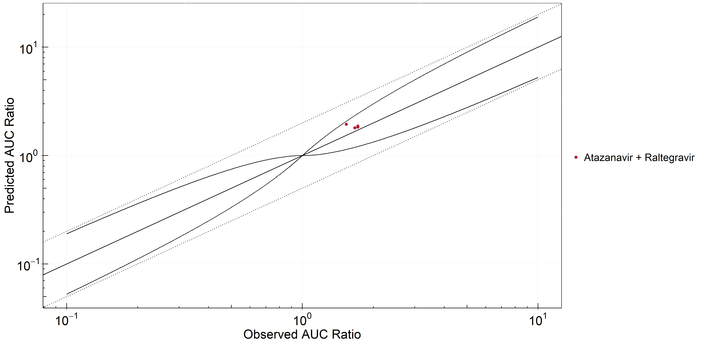
Figure 9: UGT1A1 and UGT1A9 Inhibition DDI. Perpetrator: Atazanavir. Predicted vs. Observed AUC Ratio.
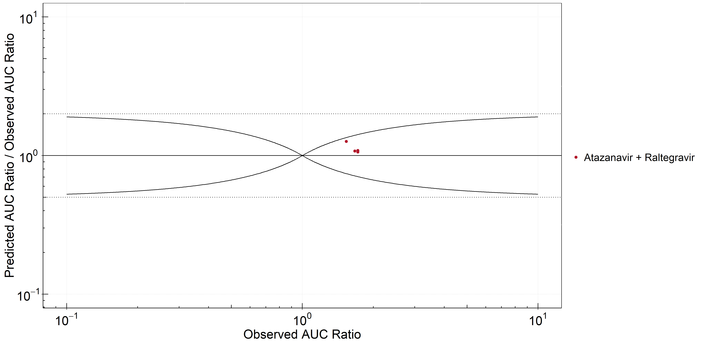
Figure 10: UGT1A1 and UGT1A9 Inhibition DDI. Perpetrator: Atazanavir. Predicted/Observed vs. Observed AUC Ratio.
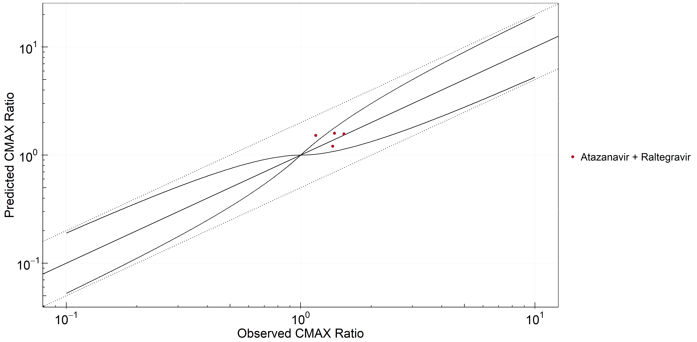
Figure 11: UGT1A1 and UGT1A9 Inhibition DDI. Perpetrator: Atazanavir. Predicted vs. Observed CMAX Ratio.
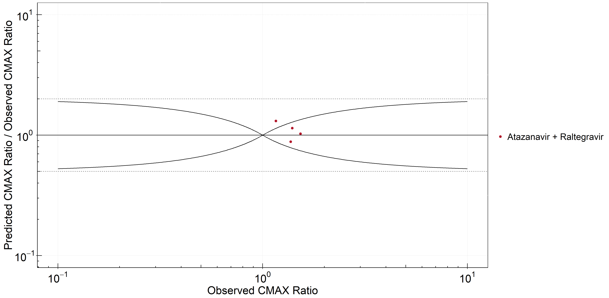
Figure 12: UGT1A1 and UGT1A9 Inhibition DDI. Perpetrator: Atazanavir. Predicted/Observed vs. Observed CMAX Ratio.
Table 7: GMFE for UGT1A1 and UGT1A9 Inhibition DDI DDIRatio-1-perpetrator-Atazanavir
PK parameter
GMFE
AUC
1.12
CMAX
1.15
Table 8: Summary table for UGT1A1 and UGT1A9 Inhibition DDI DDIRatio-1-perpetrator-Atazanavir AUC
AUC
Number
Ratio [%]
Points total
4
-
Points within Guest et al.
4
100
Points within 2 fold
4
100
Table 9: Summary table for UGT1A1 and UGT1A9 Inhibition DDI DDIRatio-1-perpetrator-Atazanavir CMAX
CMAX
Number
Ratio [%]
Points total
4
-
Points within Guest et al.
3
75
Points within 2 fold
4
100
2.2.2 Mefenamic Acid
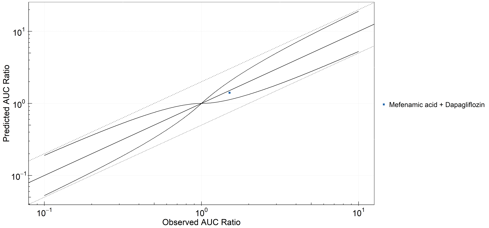
Figure 13: UGT1A1 and UGT1A9 Inhibition DDI. Perpetrator: Mefenamic Acid. Predicted vs. Observed AUC Ratio.
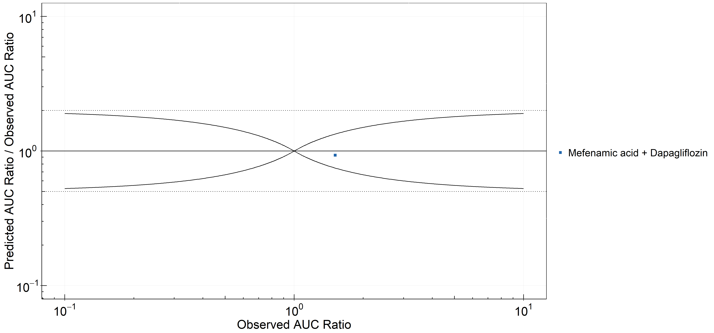
Figure 14: UGT1A1 and UGT1A9 Inhibition DDI. Perpetrator: Mefenamic Acid. Predicted/Observed vs. Observed AUC Ratio.
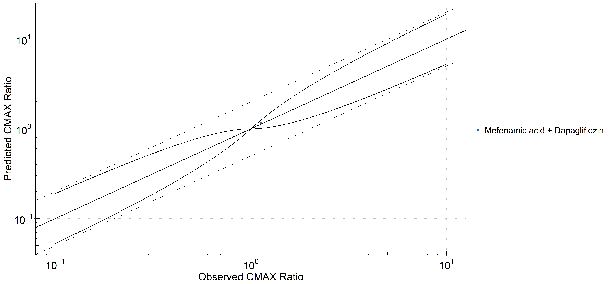
Figure 15: UGT1A1 and UGT1A9 Inhibition DDI. Perpetrator: Mefenamic Acid. Predicted vs. Observed CMAX Ratio.
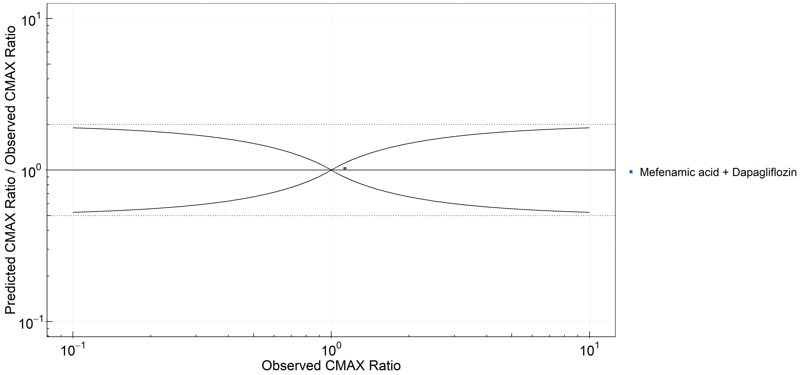
Figure 16: UGT1A1 and UGT1A9 Inhibition DDI. Perpetrator: Mefenamic Acid. Predicted/Observed vs. Observed CMAX Ratio.
Table 10: GMFE for UGT1A1 and UGT1A9 Inhibition DDI DDIRatio-1-perpetrator-Mefenamic Acid
PK parameter
GMFE
AUC
1.07
CMAX
1.02
Table 11: Summary table for UGT1A1 and UGT1A9 Inhibition DDI DDIRatio-1-perpetrator-Mefenamic Acid AUC
AUC
Number
Ratio [%]
Points total
1
-
Points within Guest et al.
1
100
Points within 2 fold
1
100
Table 12: Summary table for UGT1A1 and UGT1A9 Inhibition DDI DDIRatio-1-perpetrator-Mefenamic Acid CMAX
CMAX
Number
Ratio [%]
Points total
1
-
Points within Guest et al.
1
100
Points within 2 fold
1
100
2.3 Victim
2.3.1 Raltegravir
Figure 17: UGT1A1 and UGT1A9 Inhibition DDI. Victim: Raltegravir. Predicted vs. Observed AUC Ratio.
Figure 18: UGT1A1 and UGT1A9 Inhibition DDI. Victim: Raltegravir. Predicted/Observed vs. Observed AUC Ratio.
Figure 19: UGT1A1 and UGT1A9 Inhibition DDI. Victim: Raltegravir. Predicted vs. Observed CMAX Ratio.
Figure 20: UGT1A1 and UGT1A9 Inhibition DDI. Victim: Raltegravir. Predicted/Observed vs. Observed CMAX Ratio.
Table 13: GMFE for UGT1A1 and UGT1A9 Inhibition DDI DDIRatio-1-victim-Raltegravir
PK parameter
GMFE
AUC
1.12
CMAX
1.15
Table 14: Summary table for UGT1A1 and UGT1A9 Inhibition DDI DDIRatio-1-victim-Raltegravir AUC
AUC
Number
Ratio [%]
Points total
4
-
Points within Guest et al.
4
100
Points within 2 fold
4
100
Table 15: Summary table for UGT1A1 and UGT1A9 Inhibition DDI DDIRatio-1-victim-Raltegravir CMAX
CMAX
Number
Ratio [%]
Points total
4
-
Points within Guest et al.
3
75
Points within 2 fold
4
100
2.3.2 Dapagliflozin
Figure 21: UGT1A1 and UGT1A9 Inhibition DDI. Victim: Dapagliflozin. Predicted vs. Observed AUC Ratio.
Figure 22: UGT1A1 and UGT1A9 Inhibition DDI. Victim: Dapagliflozin. Predicted/Observed vs. Observed AUC Ratio.
Figure 23: UGT1A1 and UGT1A9 Inhibition DDI. Victim: Dapagliflozin. Predicted vs. Observed CMAX Ratio.
Figure 24: UGT1A1 and UGT1A9 Inhibition DDI. Victim: Dapagliflozin. Predicted/Observed vs. Observed CMAX Ratio.
Table 16: GMFE for UGT1A1 and UGT1A9 Inhibition DDI DDIRatio-1-victim-Dapagliflozin
PK parameter
GMFE
AUC
1.07
CMAX
1.02
Table 17: Summary table for UGT1A1 and UGT1A9 Inhibition DDI DDIRatio-1-victim-Dapagliflozin AUC
AUC
Number
Ratio [%]
Points total
1
-
Points within Guest et al.
1
100
Points within 2 fold
1
100
Table 18: Summary table for UGT1A1 and UGT1A9 Inhibition DDI DDIRatio-1-victim-Dapagliflozin CMAX
CMAX
Number
Ratio [%]
Points total
1
-
Points within Guest et al.
1
100
Points within 2 fold
1
100
3 Concentration-Time Profiles
The following section shows the correlations between observed and model-predicted AUC and Cmax ratios, respectively.
Specifically, the PBPK model performance for the PK parameters AUC ratio (AUCR) and Cmax ratio (CMAXR) is assessed via:
predicted (Pred) vs. observed (Obs) plots
Pred/Obs vs. Obs plots
geometric mean fold error (GMFE):
GMFE equation
number of AUCR and CMAXR falling within 2-fold error range and within the limits as suggested by Guest et al. 2011
detailed table of results for each study
In the plots,
the dotted lines denote 0.50–2.00 (2-fold) criterion,
the solid lines denote the limits as suggested by Guest et al. 2011,
the bold solid line denotes the unity line,
each color represents one combination of drugs,
squares represent studies with intravenous administration of the victim drug and circles represent studies with oral administration of the victim drug.
3.1 Atazanavir - Raltegravir DDI
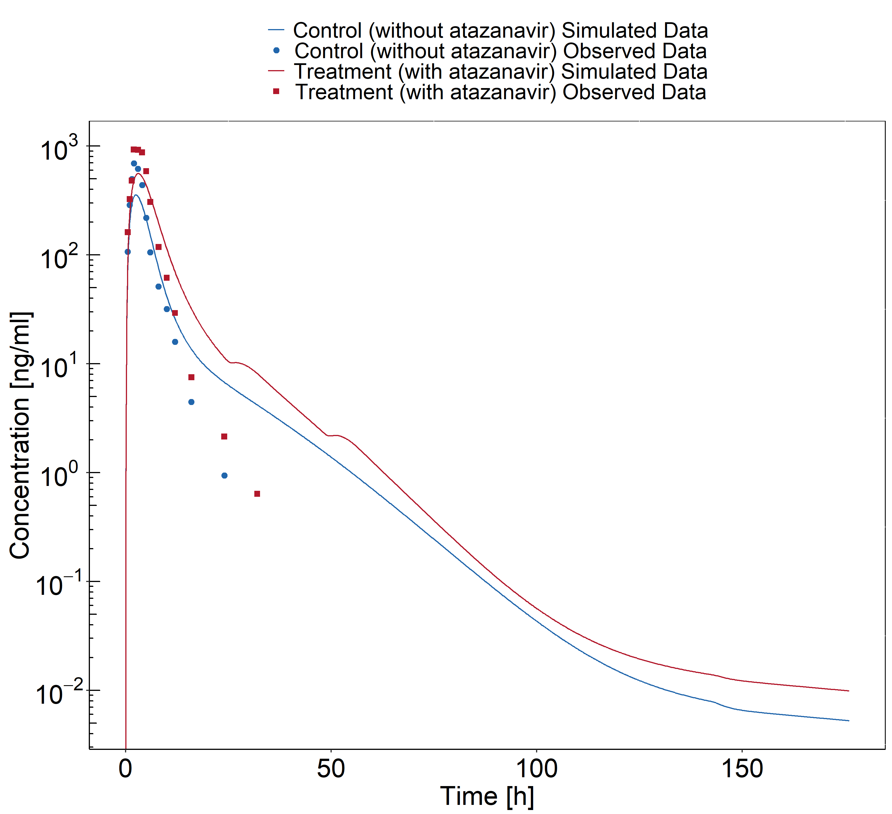
Figure 25: Iwamoto 2008
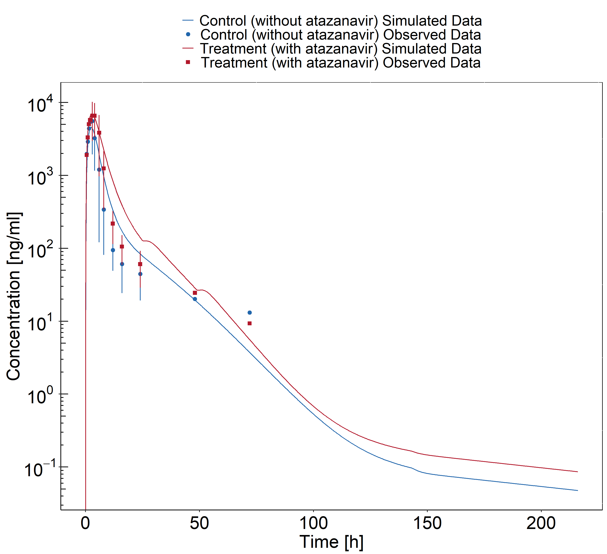
Figure 26: Krishna 2016
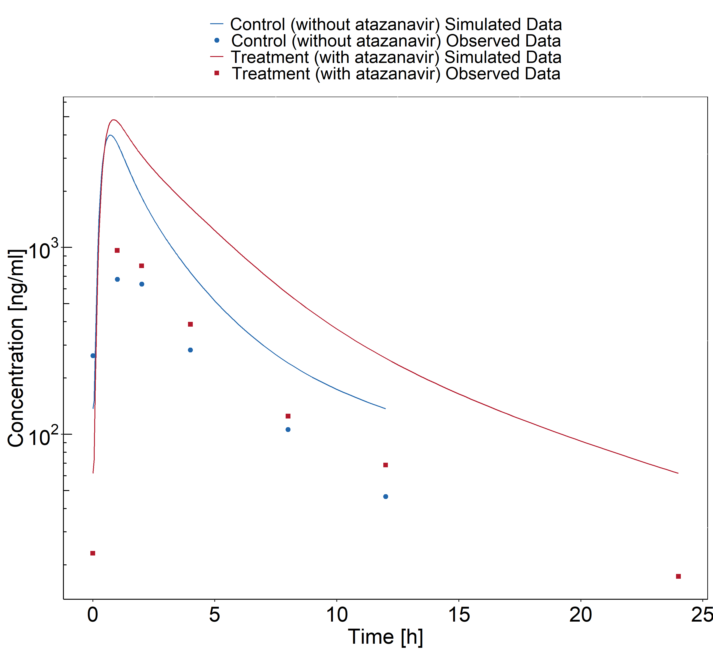
Figure 27: Neely 2010
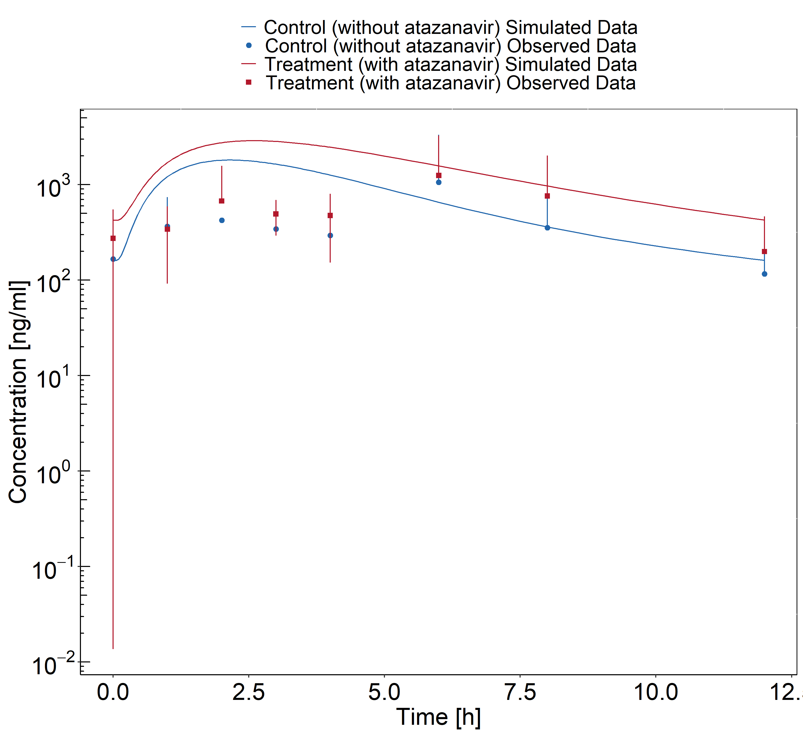
Figure 28: Zhu 2010
3.2 Mefenamic acid - Dapagliflozin DDI
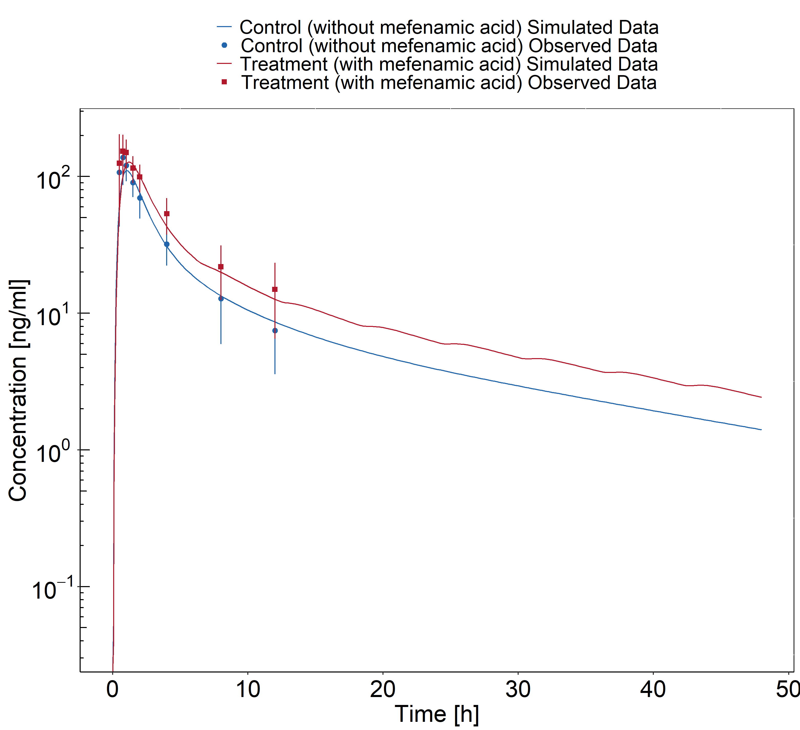
Figure 29: Kasichayanula 2013a
4 References
Guest 2011 Guest EJ, Aarons L, Houston JB, Rostami-Hodjegan A, Galetin A. Critique of the twofold measure of prediction success for ratios: application for the assessment of drug-drug interactions. Drug metabolism and disposition: the biological fate of chemicals. 2011;39(2):170-3
Iwamoto 2008 Iwamoto M, Wenning LA, Mistry GC, Petry AS, Liou SY, Ghosh K, et al. Atazanavir modestly increases plasma levels of raltegravir in healthy subjects. Clinical infectious diseases : an official publication of the Infectious Diseases Society of America. 2008;47(1):137-40.
Kasichayanula 2013 Kasichayanula S, Liu X, Griffen SC, Lacreta FP, Boulton DW. Effects of rifampin and mefenamic acid on the pharmacokinetics and pharmacodynamics of dapagliflozin. Diabetes, obesity & metabolism. 2013;15(3):280-3.
Krishna 2008 Krishna R, East L, Larson P, Valiathan C, Deschamps K, Luk JA, et al. Atazanavir increases the plasma concentrations of 1200 mg raltegravir dose. Biopharmaceutics & drug disposition. 2016;37(9):533-41.
Neely 2010 Neely M, Decosterd L, Fayet A, Lee JS, Margol A, Kanani M, et al. Pharmacokinetics and pharmacogenomics of once-daily raltegravir and atazanavir in healthy volunteers. Antimicrobial agents and chemotherapy. 2010;54(11):4619-25.
Zhu 2010 Zhu L, Butterton J, Persson A, Stonier M, Comisar W, Panebianco D, et al. Pharmacokinetics and safety of twice-daily atazanavir 300 mg and raltegravir 400 mg in healthy individuals. Antiviral therapy. 2010;15(8):1107-14.
5 Appendix
5.1 Open Systems Pharmacology Suite (OSPS) Introduction
Open Systems Pharmacology Suite (OSP suite) is a tool for PBPK modeling and simulation of drugs in laboratory animals and humans. PK-Sim® and MoBi® are part of the OSP suite [1]. PK-Sim® is based on a generic PBPK-model with 18 organs and tissues. One of the main assumptions is that all compartments are well-stirred. Represented organs/tissues include arterial and venous blood, adipose tissue (separable adipose, excluding yellow marrow), brain, lung, bone (including yellow marrow), gonads, heart, kidneys, large intestine, liver, muscle, portal vein, pancreas, skin, small intestine, spleen and stomach, as shown in Figure 1.
Each organ consists of four sub-compartments namely the plasma, blood cells (which together build the vascular space), interstitial space, and cellular space. Distribution between the plasma and blood cells as well as between the interstitial and cellular compartments can be permeability-limited. In the brain, the permeation barrier is located between the vascular and the interstitial space. PK-Sim® estimates model parameters (intestinal permeability [2] organ partition coefficients (tissue-to-plasma partition coefficients) [3,4], and permeabilities) from physico-chemical properties of compounds (molecular weight, pKa, acid/base properties) and the composition of each tissue compartment (lipids, water and proteins). Partition coefficients can be calculated using a variety of methods available in PK-Sim®, for example the internal PK-Sim® method [3,4] or that of Rodgers and Rowland [5-7].
Physiological databases included in the software incorporate the dependencies of organ composition, organ weights, organ blood flows and gastrointestinal parameters (gastrointestinal length, radius of each section, intestinal surface area, gastrointestinal transit times, and pH in different intestinal segments [2]), with the user-defined body weight and height and ethnicity of the individual [8]. Thereby, PK Sim® allows generating realistic virtual populations. For a detailed description of the PBPK model structure implemented in PK Sim®, see Willmann et al. [2,4,8,9] or the OSP Suite homepage (https://docs.open-systems-pharmacology.org/mechanistic-modeling-of-pharmacokinetics-and-dynamics/modeling-concepts).
Figure1: Structure of the Whole Body PBPK Model integrated in PK-Sim®
5.2 Mathematical Implementation of Drug-Drug Interactions
DDI modeling: Competitive inhibition
A detailed representation of the mathematical implementation of competitive enzyme inhibition can be found in the OSP manual here.
DDI modeling: Mechanism-based inhibition
A detailed representation of the mathematical implementation of mechanism-based enzyme inhibition can be found in the OSP manual here.
DDI modeling: Induction
A detailed representation of the mathematical implementation of enzyme induction can be found in the OSP manual here.
5.3 Automatic (re)-qualification workflow
Open Systems Pharmacology provides a dynamic landscape of model repositories and a database of observed clinical data. Additionally, a technical framework to assess confidence of a specific intended use has been developed (qualification runner and reporting engine). This framework allows for an automatic (re)-qualification workflow of the OSP suite, comprising the following steps (Figure 1):
PBPK model development and verification with observed data,
Qualification plan generation,
Qualification plan execution,
Qualification report generation.
Figure 1: OSP suite automatic (re)-qualification workflow
In a first step, the respective qualification scenario is saved in a special qualification repository on GitHub. This qualification scenario repository contains a detailed qualification plan that links and combines respective models and data to address the use case that shall be qualified. Therefore, the qualification plan consists of:
PK-Sim project files,
Additional model building steps (if applicable),
Description of potential cross-dependencies between PK-Sim project files (if applicable),
Observed data (needed for model development and verification),
Qualification scenario description text modules
Detailed report settings to describe the generation of charts and qualification measures.
PK-Sim projects, observed data sets, and qualification scenario text modules are deposited in distinct repositories and are referenced by the qualification plan (Figure 2).
Figure 2: Qualification scenario repository landscape on GitHub
In a second step the qualification runner processes the qualification plan, i.e. all project parts are exported and prepared for the reporting engine. The reporting engine provides a validated environment (currently implemented in MATLAB®, a transfer to R is in development) for model execution and finally generates the qualification report. This report contains the evaluation of the individual PBPK models with observed data (i.e. standard goodness of fit plots, visual predictive checks) and a comprehensive qualification of the specific use case assessing the predictive performance of the OSP suite by means of a predefined set of qualification measures and charts.
The automated execution of the described workflow can be triggered to assess re-qualification in case new data, changes in model structure or parameterization, or new OSP suite releases arise.